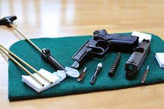

Tips for Gun Safety

Gun safety is a critical issue for anyone who owns or handles firearms. Accidents involving firearms can have devastating consequences, and it's up to gun owners to take the necessary steps to prevent them. Here are some important things to keep in mind when it comes to gun safety. Always Assume a Gun is Loaded This is one of the most important rules of gun safety. Even if you're certain a gun is unloaded, you should always treat it as if it were loaded. This means keeping the muzzle pointed in a safe direction, keeping your finger off the trigger, and treating the gun with respect. Keep Your Finger Off the Trigger Until You're Ready to Shoot One of the most common causes of accidental shootings is people accidentally pulling the trigger. To prevent this, you should always keep your finger off the trigger until you're ready to shoot. This means keeping your finger outside the trigger guard until you're ready to fire. Never Point a Gun at Anything You're Not Willing to Destroy This is another critical rule of gun safety. You should never point a gun at anything you're not willing to destroy. This includes people, animals, and property. Always be aware of where the muzzle is pointing and make sure it's pointed in a safe direction. Be Sure of Your Target and What is Beyond it Before you shoot, you should always be sure of your target and what is beyond it. This means being aware of what's in front of and behind your target, and making sure that your shot won't hit anything you don't intend to hit. Store Guns Safely When you're not using your firearms, you should always store them safely. This means keeping them unloaded and locked up, with ammunition stored separately. If possible, you should use a gun safe or lockbox to store your firearms. Educate Yourself and Others To prevent accidents, it's important to educate yourself and others about gun safety. This includes learning about the proper handling and storage of firearms, as well as teaching others, especially children, about gun safety. Be Sober and Focused When Handling Guns Finally, you should never handle firearms when you're under the influence of drugs or alcohol, or when you're distracted or unfocused. When you're handling guns, you need to be sober, focused, and fully aware of what you're doing. In conclusion, gun safety is essential for anyone who owns or handles firearms. By following these important guidelines, you can help prevent accidents and keep yourself and others safe.Here's a quick summary of what has been said in this article:
- Always keep the gun pointed in a safe direction.
- Keep your finger off the trigger until you are ready to shoot.
- Be sure of your target and what is beyond it.
- Never rely on a gun's safety mechanism.
- Store guns unloaded and locked up, out of reach of children and unauthorized adults.
- Always assume a gun is loaded. Even if you know the gun is unloaded, treat it as if it is loaded at all times.
- Be sober and focused when handling guns. Don't handle guns when you're under the influence of drugs or alcohol, or when you're distracted or unfocused.
Tips for Cleaning Guns
Proper gun maintenance includes cleaning your firearm regularly. Here are some tips for cleaning a gun: Unload the gun: Before you start cleaning your gun, make sure it's unloaded. Remove the magazine and clear the chamber by visually inspecting and physically verifying that the firearm is empty. Gather your cleaning supplies: You'll need a cleaning rod, bore brush, cleaning solvent, gun oil, cleaning patches, and a cleaning jag. Make sure you use cleaning supplies that are specifically designed for your firearm type. Disassemble the gun: Follow your firearm manufacturer's instructions on how to safely disassemble the gun for cleaning. This will typically involve removing the barrel, slide, or bolt. Clean the barrel: Using the cleaning rod, attach the bore brush and run it through the barrel several times to loosen any fouling. Next, apply cleaning solvent to the cleaning patch, attach the jag, and run it through the barrel until the patch comes out clean. Clean the action: Use a nylon brush and cleaning solvent to clean the action and other parts of the gun. Wipe down with a clean cloth or paper towel. Lubricate the gun: Once you've finished cleaning, apply a small amount of gun oil to a cleaning patch or cloth and wipe down all metal surfaces. This will help protect against rust and keep the gun functioning properly. Reassemble the gun: Follow your firearm manufacturer's instructions on how to safely reassemble the gun after cleaning. Remember to always handle your firearm safely, even when cleaning it. By following these tips and using proper cleaning techniques, you can help keep your gun in top condition and functioning properly. Here's a quick summary of what has been said in this article:
- Unload the gun and ensure it is completely safe before cleaning.
- Use the appropriate cleaning solvents and oils for your gun.
- Clean the barrel, chamber, and action with a cleaning rod and patches.
- Check the gun for any signs of wear or damage while cleaning.
- Store the gun in a dry, cool, and protected place after cleaning.